Veinte momentos de archivo que recorren la historia de Deftones, desde la etapa liderada por Chi Cheng hasta la formación actual.
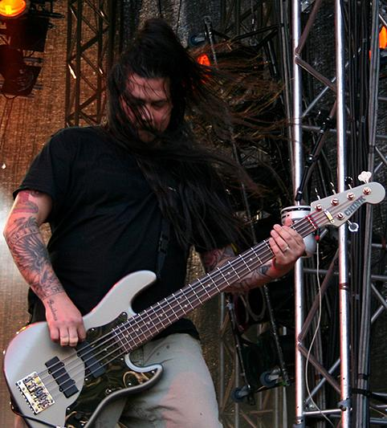
Chi Cheng sostuvo el pulso grave y melódico de Deftones en una época decisiva. Su bajo aparece en los discos desde Adrenaline hasta Diamond Eyes, junto con ser el escritor de muchas de las mejores canciones de Deftones como "Mascara" y "Bloody Cape".
Retrato de Chi Cheng, Wikimedia Commons.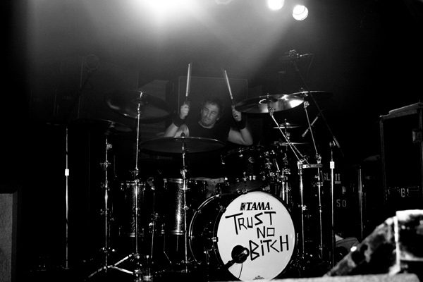
Abe Cunningham, responsable de combinar golpes precisos con silencios y dinámicas en vivo. En esta etapa presentó el repertorio de Saturday Night Wrist.
Abe Cunningham, Wikimedia Commons, 2007.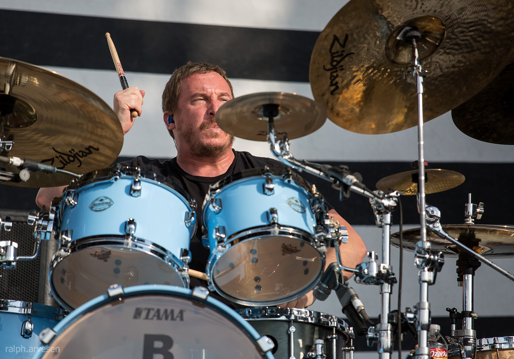
El baterista detrás de temas como "Change" y "Digital Bath"; su modo de tocar ayuda a que el sonido pase de la violencia al ambiente sin perder impacto.
Abe Cunningham, Wikimedia Commons, 2014.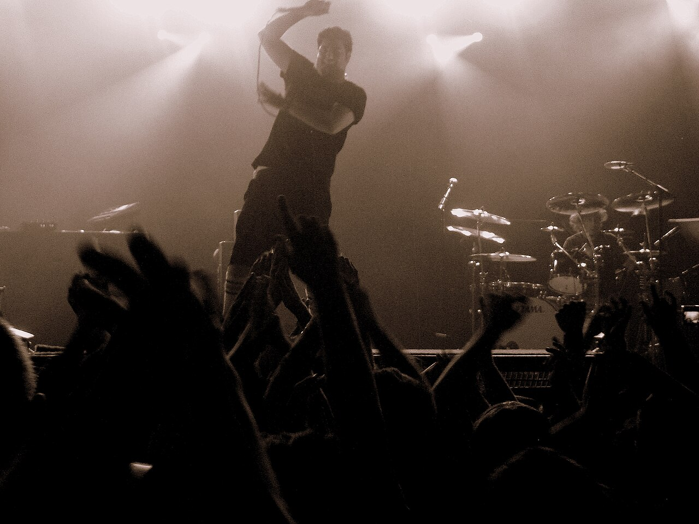
En Milán, el grupo extendía la gira de Saturday Night Wrist. "Mein" y "Hole in the Earth" eran piezas centrales de aquel espectáculo.
Deftones en Milán, Wikimedia Commons, 2007.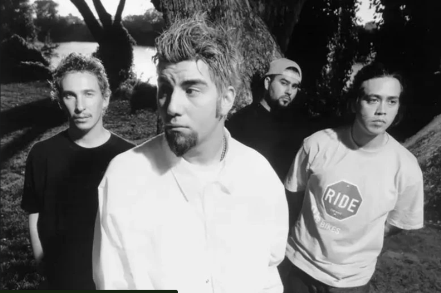
Retrato de Deftones con su formación clásica de finales de los noventa: Chino Moreno, Stephen Carpenter, Abe Cunningham y Chi Cheng. La fotografía preserva el aspecto informal y cercano de la banda durante la era de Around the Fur.
Archivo fotográfico de la banda, época de Around the Fur.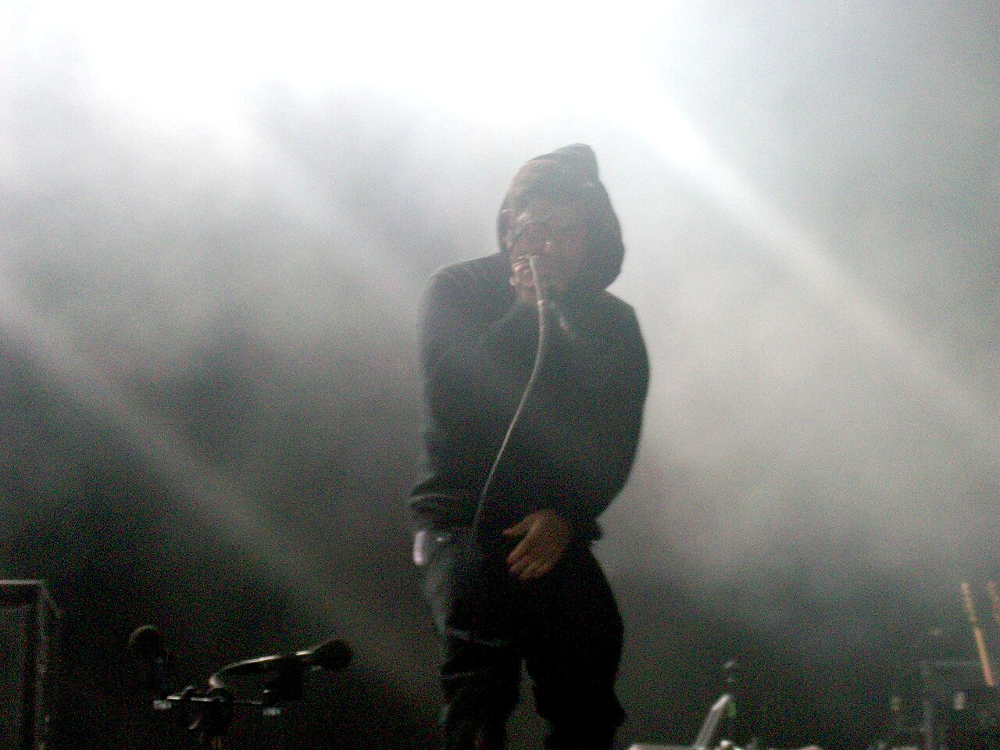
El espectáculo de Pinkpop 2009 anticipaba Diamond Eyes: Chi ya había sido reemplazado temporalmente en los ensayos por Sergio Vega, y la banda estaba reconstruyendo su impulso.
Pinkpop, Wikimedia Commons, 2009.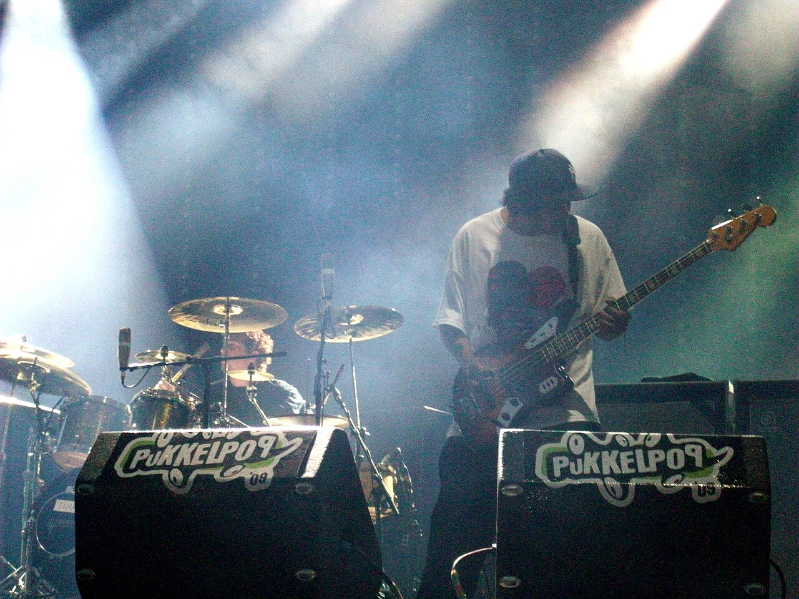
Sergio Vega sostiene las líneas graves en primer plano junto a Abe Cunningham en la batería. La imagen muestra la tensión rítmica de "My Own Summer (Shove It)".
Pinkpop, Wikimedia Commons, 2009.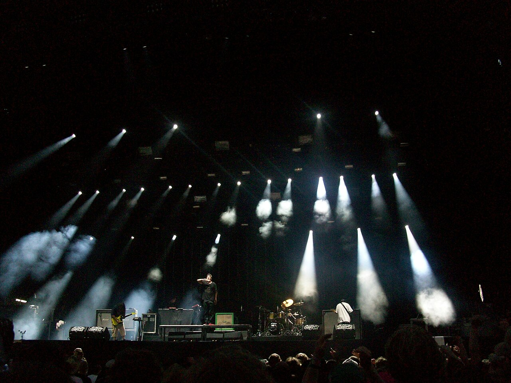
El escenario muestra a Chino Moreno, Stephen Carpenter, Sergio Vega y Abe Cunningham: la banda reduce su formación visible al frente, con Abe sosteniendo el ritmo y la guitarra cerrando la tensión del directo.
Pinkpop, Wikimedia Commons, 2009.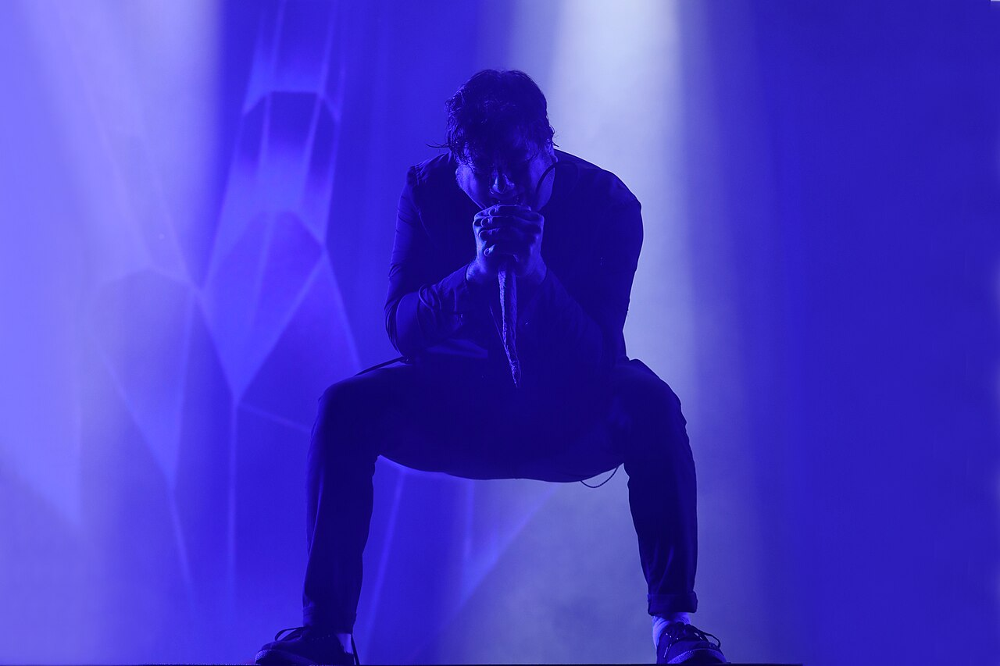
Durante "Genesis", el estreno de Ohms cobra fuerza en el festival alemán gracias al contrapunto entre Chino Moreno y la sección rítmica.
Rock im Park, Wikimedia Commons, 3 de junio de 2022.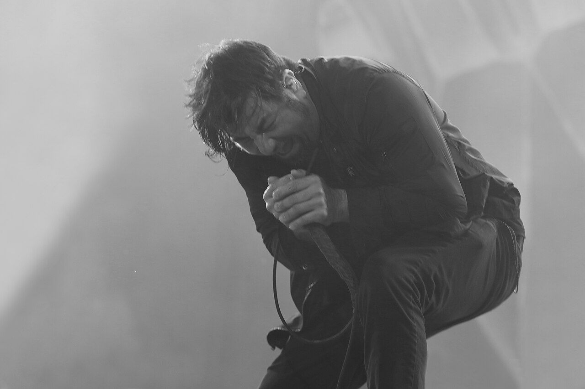
El set alemán reúne clásicos y material de Ohms. "Change (In the House of Flies)" conserva su progresión hipnótica incluso ante miles de personas.
Rock im Park, Wikimedia Commons, 3 de junio de 2022.
La formación aparece reunida frente a un paisaje al amanecer, una imagen más relajada que contrasta con la intensidad de sus presentaciones en vivo durante la era de White Pony.
Fotografía promocional de Deftones, 1999-2000.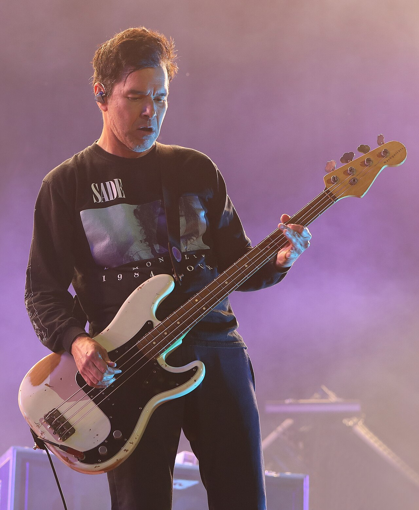
Fred Sablan asumió el bajo en las giras de Deftones a partir de 2022, continuando la fuerza rítmica y melódica del instrumento tras la salida de Sergio Vega.
Fred Sablan, Wikimedia Commons.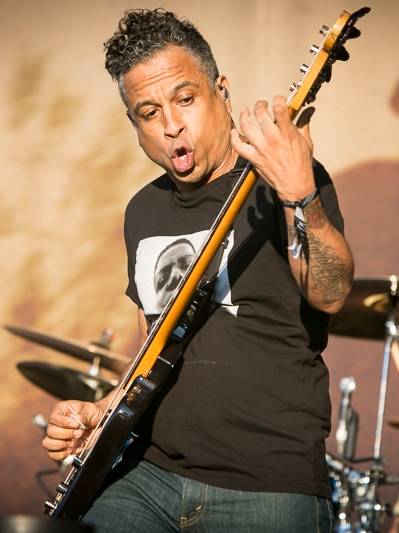
Retrato en solitario de Sergio Vega, bajista de Deftones desde 2009 hasta 2021. Su apoyo grave permitió a la banda mantener la densidad durante Koi No Yokan, Gore y Diamond Eyes.
Sergio Vega, Wikimedia Commons, 2013.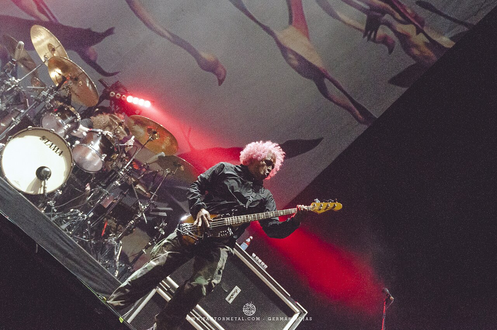
En la edición mexicana de Knotfest, Deftones presentó canciones de Gore. Sergio Vega mantiene el peso grave sobre "Prayers/Triangles".
Knotfest México, Wikimedia Commons, diciembre de 2016.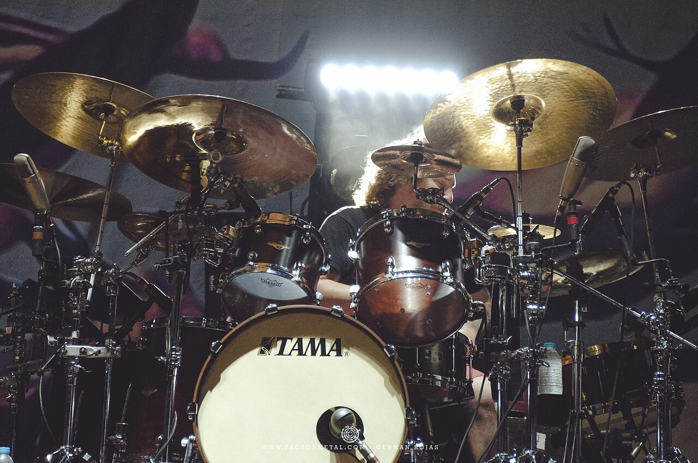
La formación completa ocupa el escenario de México. La voz y los juegos de iluminación hacen más evidente el cambio entre sus temas más pesados y sus pasajes abiertos.
Knotfest México, Wikimedia Commons, diciembre de 2016.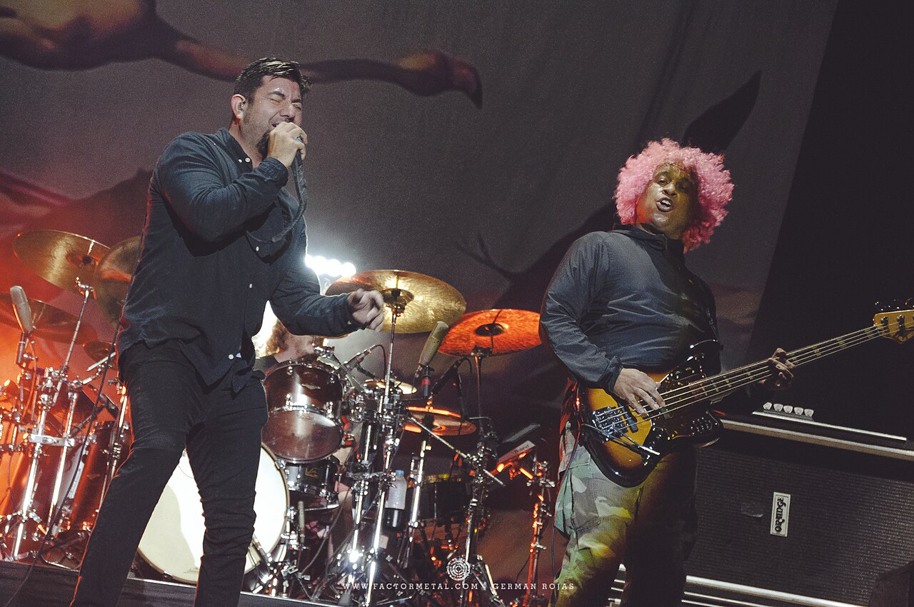
La imagen muestra a Chino Moreno al frente y a Sergio Vega en el bajo. Durante el repertorio mexicano de 2016, la banda alternó "Be Quiet and Drive (Far Away)" con temas densos de Gore.
Knotfest México, Wikimedia Commons, diciembre de 2016.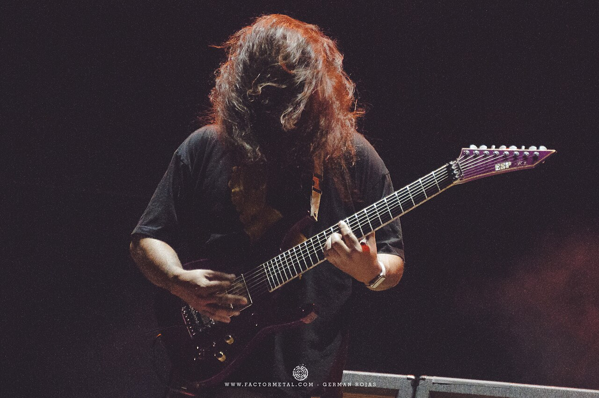
Stephen Carpenter sostiene el muro sonoro desde su guitarra en Knotfest México, mientras las texturas pesadas dan paso a los pasajes más abiertos del repertorio.
Knotfest México, Wikimedia Commons, diciembre de 2016.
La banda aparece reunida y desprendida de la puesta escénica, mostrando la relación colectiva que sostiene su dinámica entre las canciones más agresivas y los pasajes atmosféricos.
Archivo fotográfico de Deftones.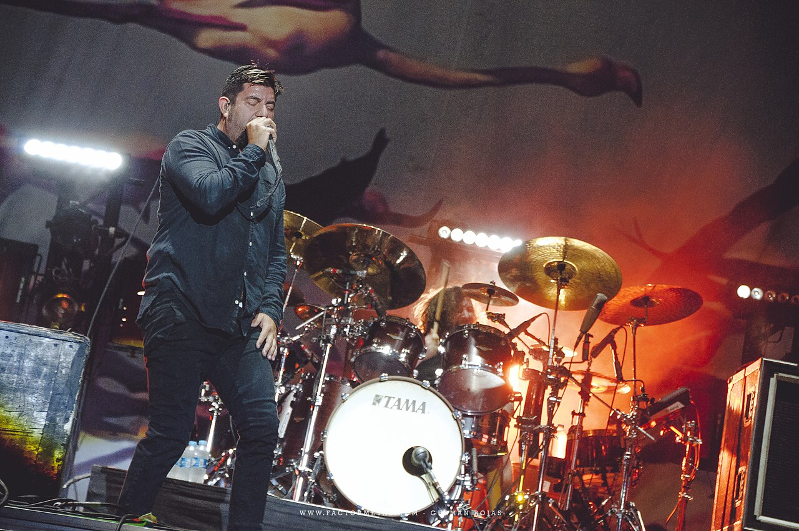
Fotografía tomada durante el directo: Chino Moreno se presenta al frente mientras Abe Cunningham sostiene el ritmo desde la batería, ambos dentro de la puesta escénica de Knotfest México.
Knotfest México, Wikimedia Commons, diciembre de 2016.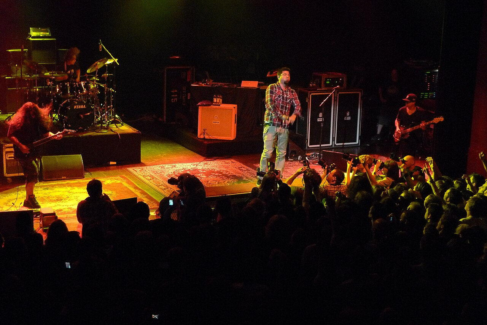
En 2011, Deftones retomó giras tras Diamond Eyes. "Sextape" ganó una dimensión amplia: sus capas ambientales no se pierden frente al público.
Deftones en directo, Wikimedia Commons, 2011.
Ver Videoclips
Ir al Blog